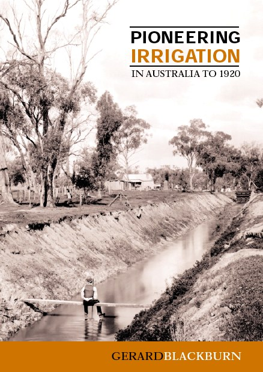

From the rear cover
The application of water to land is a key issue in Australian
history. From the early days of European settlement, many saw
irrigation as the way to increase agricultural production and promote
population growth. Irrigation has been one of Australia's speculative
business ventures, with a history of a few successes and many
failures. By the early twentieth century the deficiencies of private
enterprise led governments to take a major role in regulating and
promoting irrigation projects. This book provides a clearly written
and meticulously researched account of the contribution that many
individuals have made to exploring the potential of irrigation in its
first century to 1920.
What is striking is the ingenuity of these pioneers. Not only were
rivers used, but also lakes, springs, sewage and artesian water, and
experiments were made with a variety of different technologies to find
what was suited to particular localities. The main regions covered are
in Tasmania, Victoria, New South Wales and South Australia (especially
the Murray River basin), and to a lesser extent Queensland, Western
Australia and the Northern Territory.
This book makes a useful contribution to the history of Australia's
environment, economy, technology, politics and demography. It will be
of special interest to those studying local history in rural areas.
About the author
Gerard ('Dick') Blackburn (1918–1999)
was a research scientist with the CSIRO, employed in the Division of
Soils (now Land and Water) in Adelaide. He had a life-long interest in
Australian rural history and wrote this book in his retirement.
Publisher
Australian Scholarly Publishing Pty Ltd, PO Box 299,
Kew, Victoria 3101, Australia, or Suite 102, 282 Collins
St. Melbourne, Victoria 3000, Australia. Tel: (03) 9817 5208, fax:
(03) 9817 6431, email:
aspic@ozemail.com.au. See also CSIRO Publishing's
link.
Publication data
Release date: May 2004. 219 pages. Includes
index. Format: B5 paperback. ISBN: 1 740970 46 2. Price: $39.95.
Contents
Preface
1. The Earliest Irrigators
2. Tasmania 1835–1855
3. Australian Mainland 1835–1855
4. Irrigation and Water Conservation 1855–1880
5. Irrigation by Independent Producers from 1880
6. Official Inquiries and Outcomes 1880–1890
7. Experience of Irrigation Trust
8. Irrigation Colonies at Mildura and Renmark
9. Proposals for Other Irrigation Colonies
10. Irrigation of Group Settlements from 1891
11. Sewage Irrigation 1880–1920
12. Use of the River Murray for Navigation and Irrigation
13. State Intervention in Irrigation 1900–1920
14. Underground Water for Irrigation
15. Conclusion
Notes
Select Bibliography
Index
Sample pages (PDF format)
Table of contents
Preface